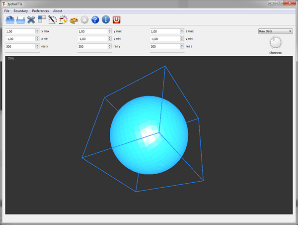

Welcome to tychoBCG3D - TYCHO's 3D boundary condition generator for 3D simulations
Aim of this application is the generation of TYCHO boundary conditions from point data, such as 3D scans (e.g.kinect) or STL data from CAD applications. The result is a regular grid with the resolution - res x, res y and res z - in the computational domain with the extent xmax, ymax, ymin, ymax and zmin, zmax.
A typical workflow could be:
1.) open STL data or point data (plain text file with x,y,z and normal vector x,y,z in one datarow)
2.) set the relative size of the computational domain (the physical diameters are then set within a TYCHO simulation); note that tychoBCG3D scales all models to 1
3.) set the resolution
4.) save the boundary for TYCHO
4.a) you can check the sampled data of the boundaries by choosing "sampled data" in the dropdown box in the right part of the MainApp
5.) start tychoGUI and use this boundary in your TYCHO 3D-simulation
The main Window of tychoBCG3D

The main menu bar
1 Open point data (just ascii files with x,y,z coordiantes and normal_x, normal_y, normal_z components in one row with space as delimiter, e.g. 1.0 1.0 1.0 1.0 0.0 0.0)
2 Open STL data(binary or ascii)
3 Reset computational domain to the size of the boundary
4 Save TYCHO boundary condition
5 Solid Color
6 Ambient Color
7 Backround Color
8 Calculate Normal Vectors (if somehow corrupted by the CAD software)
9 Help
10 About tychoBCG3D
11 Exit
New: You can save soundemitter files for noise simulations in TYCHO. A soundemitter file is basically the same as a boundary-condition file, but is treated as a sound source within a TYCHO simulation with special properties set-up in the parameter file.
Have fun using TYCHO
Wolfgang Kapferer